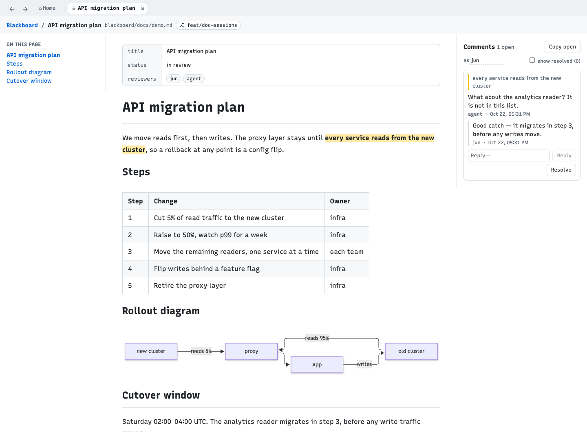
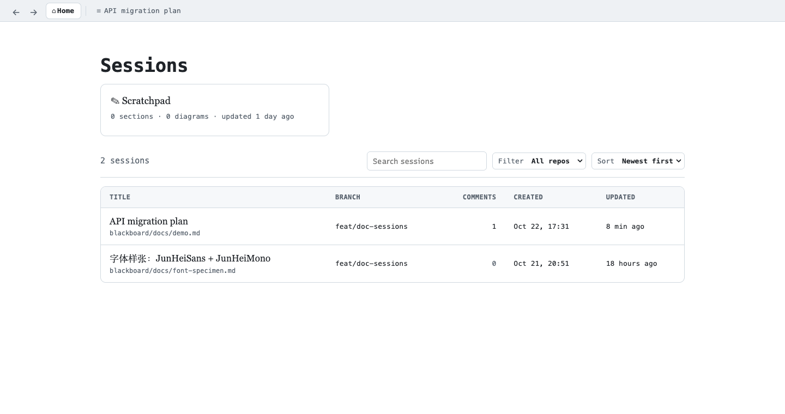

A local web app for reviewing markdown documents — select text, leave a comment, and let your coding agent answer through the same CLI.
You and the agent, going back and forth on a plan, in the document itself.
npm install -g blackboardblackboard open docs/plan.mdor with bun: bunx blackboard open docs/plan.md

The doc view — select a passage, comment; the agent answers from its shell and the page updates live.

Every session is one markdown file on disk — where it lives and which branch it is on, at a glance. Click a highlight in the app to focus its comment; click a comment to scroll to the passage.
blackboard open <file> [--no-browser] # prints "<id> <url>" blackboard sessions [--json] # id, title, location, branch, open comments blackboard comments <session> [--all] [--json] blackboard reply <session> <comment-id> "text" blackboard resolve <session> <comment-id> # or: reopen blackboard comment <session> --quote "passage" "note" blackboard wait <session> [--timeout 30m] # blocks until a human comments
The CLI edits files under ~/.blackboard under a lock shared with the web app, so it works whether or not the app is running; an open page shows its changes live.